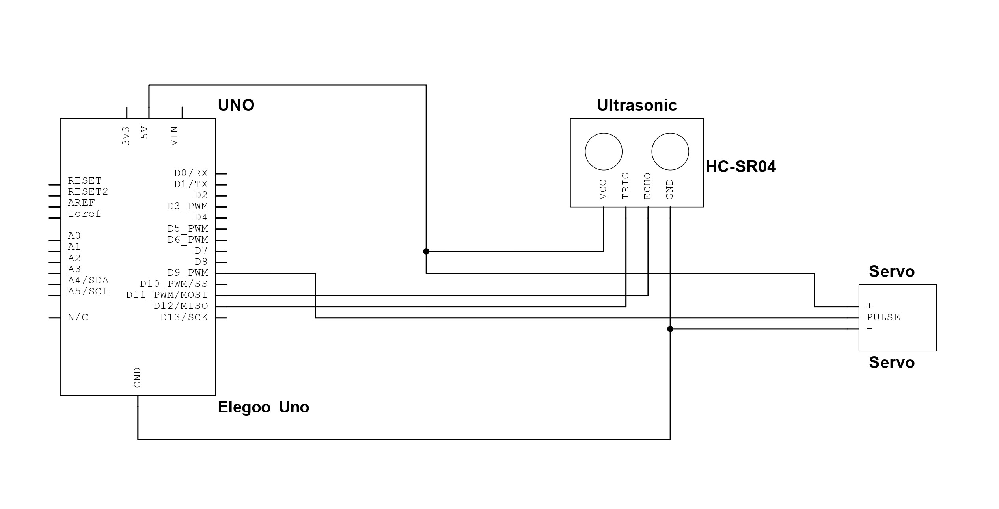

Hand Shake con Arduino
In questo progetto, voglio creare un semplice circuito con Arduino che possa salutare chi entra in laboratorio con una mano robotica.
Per farlo ci serviranno:
- Arduino Uno
- Cavo e PC per programmare l'Arduino
- Un Sensore ad Ultrasuoni (HC-SR04)
- Un Servo
- Una breadboard e dei cavetti
Circuito
Assemblare il circuito come in immagine.
In questo caso abbiamo usato un Elegoo UNO, al posto di un Arduino UNO, ma entrambe le schede vanno bene, l'importante è connettere tutto ai pin giusti altrimenti il codice non funzionerà.
Codice
Per utilizzare il codice, basterà copiarlo e incollarlo sull'IDE di Arduino e poi flasharlo.
Ricordati che servono le librerie per il Servo e per il Sensore ad Ultrasuoni per poter usare il circuito, che puoi trovare sul sito di Elegoo.
Visualizza il Codice